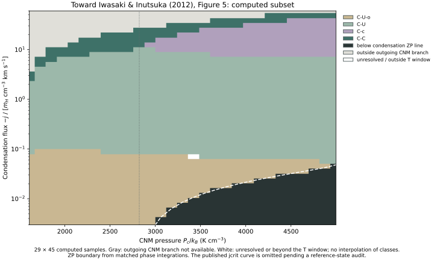
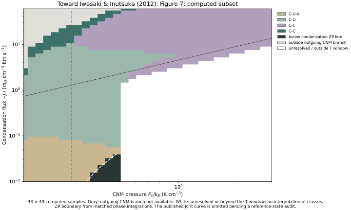
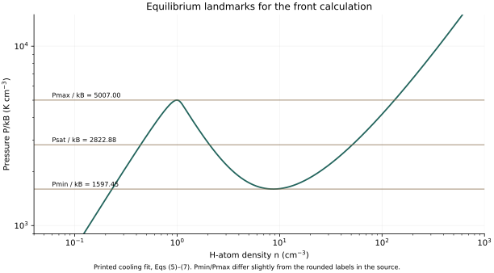

Iwasaki & Inutsuka 2012 / Figures 5 and 7 / Computed prototype
Classify the interface
by following its trajectory.
A pressure and a mass flux can select very different connections between cold and warm gas. We solve the steady front equations behind the paper’s classification diagrams, starting from the cold neutral medium.
This is a computed subset prepared for technical review, not a completed reproduction of every published region or auxiliary curve. Nine published example classifications agree. The map marks unavailable CNM branches and unresolved or temperature-limited cases instead of filling them from the source figure.
The KI2002 equilibrium benchmark documents the corrected coefficients used here, stable and unstable branches, and all three equilibrium intersections at the ZP saturation pressure.
Toward Figure 5: pressure and condensation flux.



C–U–o approaches unstable gas with a temperature overshoot; C–U approaches it monotonically. C–c reaches the critical point, while C–C connects cold equilibria. A local node at the unstable equilibrium is insufficient to establish C–U: the paper explicitly notes that the global trajectory can still overshoot.
The condensation flux is plotted as −j divided by mH × (1 cm⁻³) × (1 km s⁻¹). Positive plotted values therefore mean negative physical j. The physical mass flux has units g cm⁻² s⁻¹; the density unit implicit in the source’s compact axis label is explicit here.
Toward Figure 7: extend the pressure range.



The published Figure 7 extends beyond the bistable-pressure interval. This prototype keeps a temperature window and an explicit CNM boundary branch; those restrictions explain much of the difference in displayed coverage. The exported decisions distinguish restricted coverage from the paper’s classifications.
Check the equilibrium landmarks first.


The printed cooling fit gives Pmin/kB = 1,597.45, Pmax/kB = 5,007.00, and Psat/kB = 2,822.88 K cm⁻³. The source quotes 1596 in the text / 1598 in Figure 1, 5012, and 2823. These small differences are retained.
At Pc/kB = 3,000 K cm⁻³, the matched condensation ZP flux is −j = 0.00315993 in the plotted normalization, close to the quoted 0.0032. The calculation preserves constant mass and momentum flux and uses the full plus-density branch of equation (11), rather than imposing constant pressure throughout the front.
What is being solved?
ρ(T) = [M + √(M²−4ℛj²T)]/(2ℛT)
d(F²)/dT = ℛj[(γ+1)/(γ−1)+M/√(M²−4ℛj²T)]F + 2κρℒ
Here dθ = κdT and F = dθ/dx = κdT/dx. The physical conductive heat flux is −F. The CNM boundary is a thermal equilibrium with F = 0, approached along its outgoing saddle eigenvector. The source heating/cooling fit, pure atomic hydrogen, γ = 5/3, and κ = 2500√T are used.
For node-like targets, the solver follows log(F) and refines the remaining temperature distance. A captured trajectory has F proportional to that distance; a crossing retains finite F. Two consecutive refinements must agree. Ambiguous cases remain white. Grid boundaries have not been digitized against the published figure.
Prepared for technical review
Two implementation questions to discuss with the authors.
- Continuation of the CNM boundary: at large imposed flux, the implemented plus-density branch can lose its outgoing CNM saddle. How should the boundary or branch be continued to recover the rest of the published C–C coverage?
- The reference state for jcrit: what temperature interval and loss normalization were used to choose Tm in section 4.1.2? The prototype does not infer an unprinted selection, so it omits that overlay.
These are questions about the present implementation and interpretation. They are not assertions of errors in the paper. A useful first review package is this page, the nine example checks, the source audit, and the two grid CSVs.
The first technical milestone is agreement on these model choices. Quantitative boundary comparisons, finer sampling, and broader continuation can then follow. The front lineage provides the context connecting Zel’dovich–Pikel’ner, Penston–Brown, Nagashima, and later front studies.
Run the steady calculation.
Download the five files below into one directory. This is a small steady ODE calculation rather than a multidimensional simulation. The report records actual runtime; changing the grid or solver settings changes the cost.
python3 -m venv .venv
.venv/bin/python -m pip install -r requirements.txt
.venv/bin/python reproduce.py --output outputAll 30 checks pass, including nine published classification examples and their refinement, matched ZP integrations, equilibrium landmarks, mass and momentum conservation, critical-point pressure, and an independent finite-difference derivative. The validation report records every measurement and tolerance, the map’s coverage counts, runtime, and hashes.
Passing these checks does not validate the masked regions, the omitted jcrit overlay, shock continuation, or a complete reproduction of Figures 5 and 7.
Source.
Iwasaki & Inutsuka (2012), source preprint ↗
Published article, MNRAS 423, 3638–3645 ↗
The inspected PDF is arXiv:1204.5532v2, 14 May 2012. The template’s 2002/2018 header is not its publication date. Original implementation code is MIT. Text, figures and generated data have separate terms; see the Rights & reuse link below. original paper rights are separate.